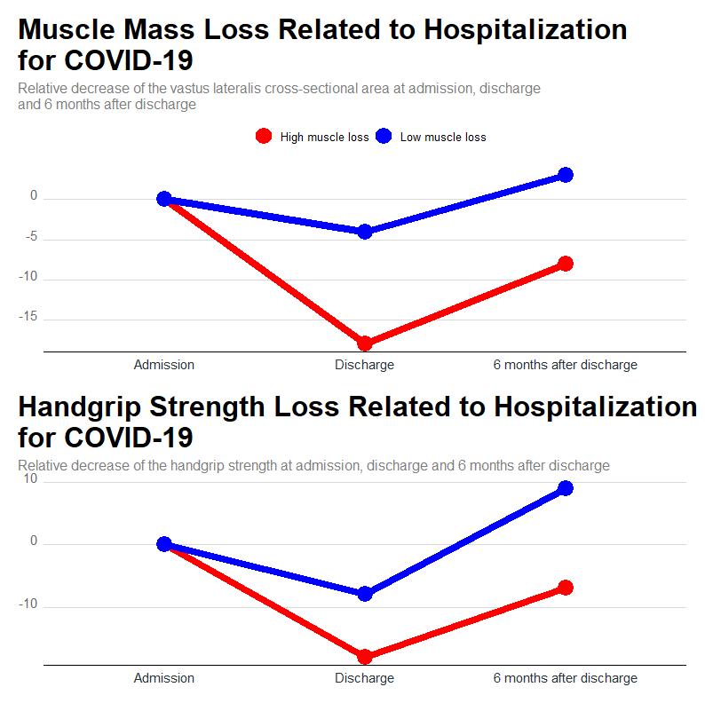
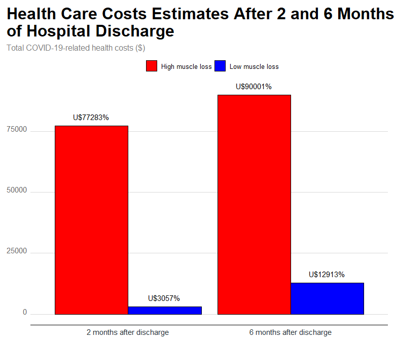

What did we do?
There is no doubt that pandemic of the COVID-19 has haunted the world due to very large number of hospitalizations, and deaths.
Past 2 years, the acute complications of the COVID-19 is controlled around the world due to large scale vaccination, but another issue related to this disease has taken attentions that is the elevated frequency of persistent symptoms in survivors of COVID-19 such as fatigue, weakness, dyspnea, decline in quality of life. These persistent symptoms have been called as “long-COVID” and may increase the risk of hospitalization care and, consequently, severely impacting healthcare systems around the world.
Long-term bed rest due to prolonged hospital length of stay, associated with a drastic increase in systemic inflammation (i.e., “cytokine storm”) typical of the COVID-19, may exacerbate the loss of muscle mass commonly observed in hospitalized patients. Also, among different clinical conditions, lower muscle mass is considered an important predictor of poor outcomes, such as mortality, more days on intensive care unit (ICU), general morbidity, impaired physical function, lower quality of life, surgical complications, less odds of discharge destination to rehabilitation facilities and, higher hospitalization costs.
In this scenario, we investigated the influence of muscle mass loss during hospitalization on post-acute sequelae of SARS-CoV-2 (PASC) and health care costs following hospital discharge in a cohort of COVID-19 survivors.
How did we do?
Briefly, eighty COVID-19 survivors aged 59±14 years were prospectively assessed.
Handgrip strength (an indicator of general strength) and vastus lateralis muscle cross-sectional area (CSAVL) were evaluated at hospital admission, discharge, and 6 months after discharge. PASC were evaluated 6 months after discharge (main outcome). Also, health care costs were evaluated 2 and 6 months after hospital discharge. Other outcomes were evaluated and may be checked in the manuscript.
To examine whether the magnitude of muscle mass loss impacts the outcomes, we ranked patients according to relative CSAVL reduction during hospital stay into either “high muscle loss” (-18±11%) or “low muscle loss” (-4±2%) group, based on median values.
What did we find in the muscle mass and strength?
Despite the muscle mass loss is expected, we observed a mean decrease of nearly two-fold (~10%) in vastus lateralis muscle cross-sectional area in about 10 days of hospitalization among patients with COVID-19, indicating a higher magnitude of muscle loss in comparison to other catabolic conditions (reduction of about 5-7% of quadriceps femoral cross-sectional area after 5-14 days of muscle disuse [i.e., immobilization or bed rest]).
❗️❗️❗️Importantly, the handgrip strength loss findings were parallel as muscle mass loss, indicating structural and functional impairments in the skeletal muscle.

And the health care costs, What did we find?
It is not abused to speculate that elevated muscle mass loss and prevalence of PASC may increase the requirement of medical assistance and thus increasing health care costs.
This idea is supported by our results indicated that patients suffering more drastic losses of muscle during hospital stay due to COVID-19 (and greater prevalence of PASC) had higher total COVID-19 related health costs than lower muscle mass loss group 2 (US$ 77283.87 vs. 3057.14) and 6 months (US$ 90001.35 vs. 12913.27) after hospital discharge. Of note, our data indicate higher expenditures for management of COVID-19 survivors than those observed in other medical conditions associated to low muscle mass during hospital stay such as major abdominal surgery (≈ US$ 40000.00), thoracolumbar spine surgery (≈ US$ 53128.00), and one-year postoperative (≈ US$ 40000.00).

Finally, COVID-19 survivors experiencing high muscle mass loss during hospital stay fail to fully recover muscle health and show greater presence of PASC, namely fatigue and myalgia, and higher costs with hospital admission and total COVID-19-related health care 2 and 6 months after hospital discharge than those losing less muscle.
These findings have two practical applications.
From a clinical perspective, muscle mass loss emerges as measure of poor prognosis in hospitalized patients and, as such, should be therapeutically approached.
From a public health standpoint, muscle loss following COVID-19 hospitalization was shown to be associated with greater health care costs, which can add pressure on the health care systems.
Hope you enjoyed it!😜!